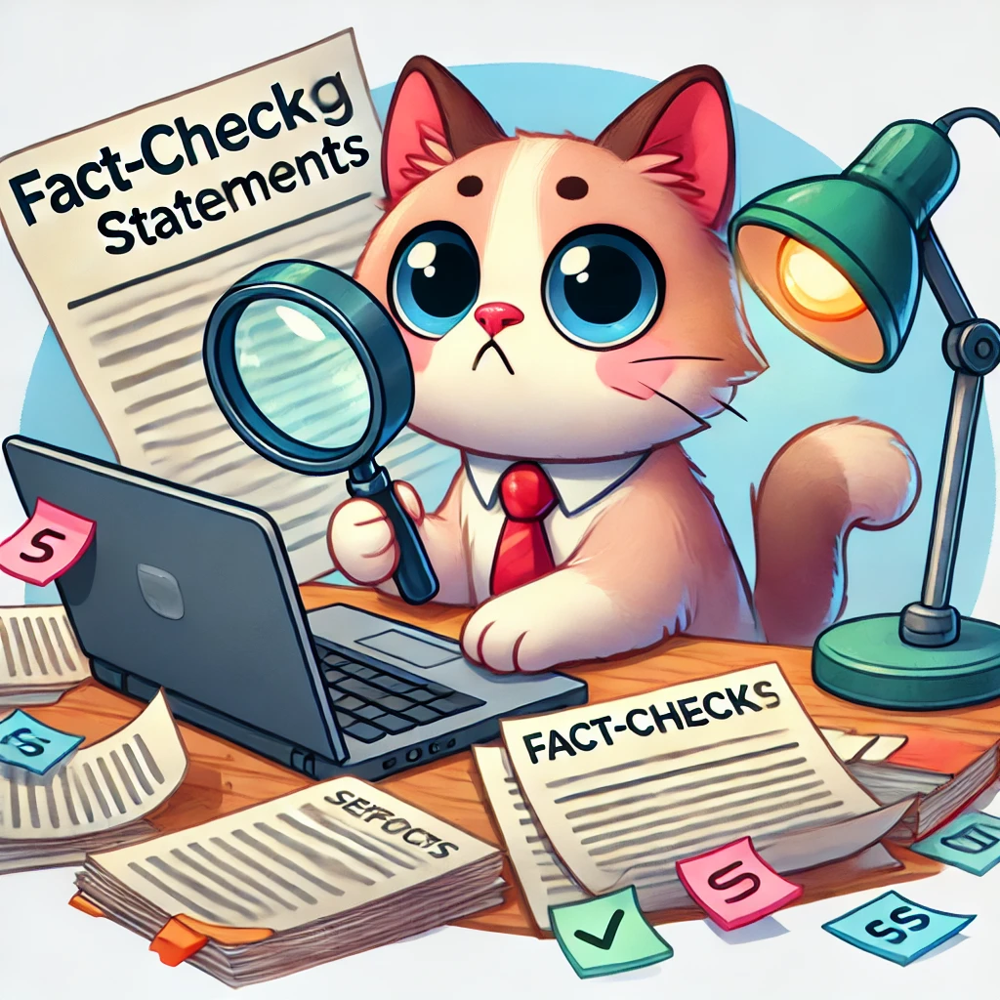
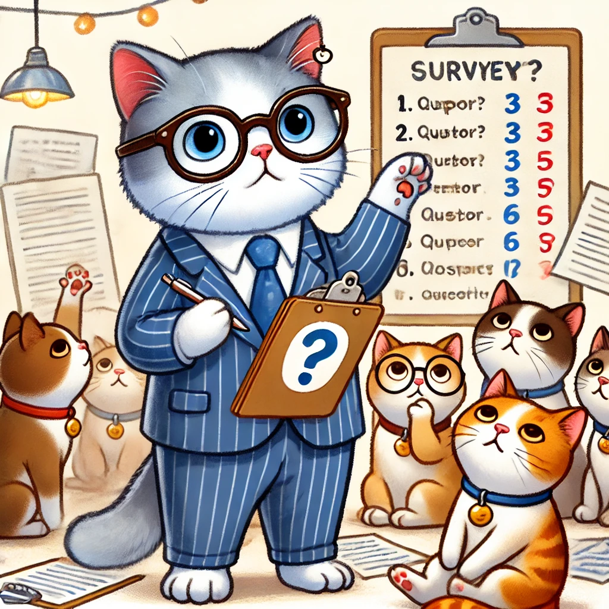
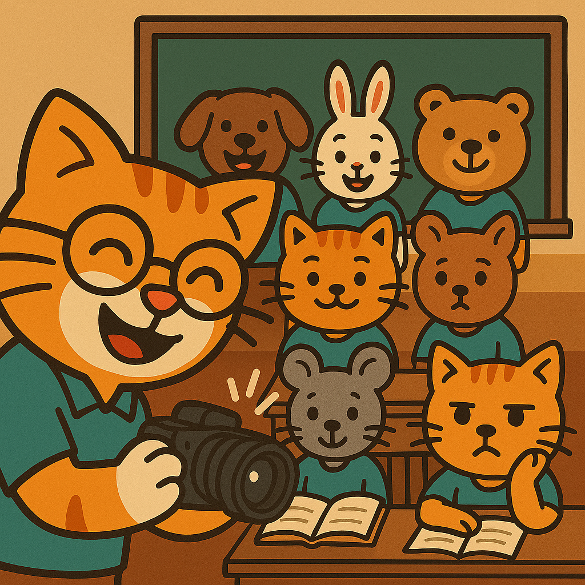

Lernen und Arbeiten mit KI
Diese Site ist noch im Aufbau. Bitte senden Sie Feedback, falls etwas nicht funktioniert oder Sie weitere Funktionen wünschen. Der Zugang ist passwortgeschützt, da die KI-Zugriffe kostenpflichtig sind: Bitte nur innerhalb der Kantonsschule Wettingen sharen.
⚠️ Datenschutz & KI-Zusammenarbeit
Geben Sie in den Formularfeldern keine persönlichen Daten ein. Diese werden extern (momentan zu OpenAI) verarbeitet. Diese Site erfasst keinerlei Meta-Daten (IP, Ort, etc.).
Bleiben Sie kritisch! KI-Inhalte können überzeugend wirken, aber Fehler enthalten. Sie sollten die Kontrolle behalten und sich nicht Lernerfahrungen nehmen lassen. → Flyer zur Zusammenarbeit von Mensch und KI
Lernen und Prüfungsvorbereitung
KI-Lern-Tutor
Lernen durch Beantworten von KI-Fragen mit automatischer Rückmeldung.
- Lernziele hochladen → Skript generieren (Word, PDF, Podcast)
- KI-Skript als Flowchart visualisieren
- Anspruchsvolle Fragen mit KI-Feedback
- Sprache: DE / einfaches DE / EN
- Kontext: Standard / Schulbücher / Skripts
Chat mit Dokumenten
Fragen zu Biologiebüchern, IB-Dokumenten (IA, EE) und Abschlussarbeiten stellen.
- Biologiewissen vertiefen
- Prüfungsvorbereitung
- Große Arbeiten planen
Mündliche Prüfung
Trainieren Sie mündliche Prüfungssituationen mit KI-Bewertung.
- Nervosität abbauen
- Mehrere Stimmen verfügbar
- Wohlwollende oder kritische Atmosphäre wählbar
Informationen bewältigen
News-Übersicht
Zusammenhängende Zusammenfassung zu "Naturwissenschaft & Technik" oder "KI".
- Zum Lesen oder Hören
- Keine einzelnen Meldungen

KI-Fakten-Überprüfer
Vergleicht Aussagen gegen Google-Suchresultate und evaluiert Übereinstimmung.
- Schnelle 2. Meinung
- Kritische Aussagen überprüfen
Abstracts-Zusammenfassung
Wissenschaftliche Übersicht basierend auf PubMed-Abstracts.
- Schnelle Übersicht zu Spezialthemen
- Wissenschaftlich fundiert
Projektunterricht

Virtuelle Umfrage
KI generiert synthetische Personen, die Ihre Umfrage beantworten.
- Fragen testen
- Ausgabe als Excel + Report
Virtuelles Interview
Beschreiben Sie Ihre Wunsch-Person, die dann Ihre Fragen mündlich beantwortet.
- Interview-Methode ausprobieren
- Transkript-Format kennenlernen
Tools für Lehrpersonen
Unterrichtsmaterial testen
Präsentieren Sie Ihren Auftrag einer virtuellen Klasse mit 8 Persönlichkeiten.
- Kritisches, direktes Feedback
- Material optimieren
Prüfungsfrage evaluieren
Einstufung nach Bloom/Krathwohl, beantwortet von virtuellen Schüler*innen.
- Verständlichkeit prüfen
- Schwierigkeitsgrad einschätzen

Namen lernen
Klassenfotospiegel hochladen und Namen spielerisch lernen.
- Zufällige Reihenfolge
- Keine KI, aber praktisch
Sprachen lernen
Chinesische Kurzgeschichte
Einfache Geschichten mit Pinyin, Übersetzung, Bild und Sprachausgabe.
- Sehr einfaches Vokabular
- Chinesisch lesen lernen
Chinesisch plaudern
Textchat oder Spracheingabe mit geduldiger virtueller Person.
- Einfaches Niveau
- Antworten hören und lesen
Chinesischen Satz übersetzen
Ein Satz auf Chinesisch in Text und Sprache, eigene Übersetzung mit KI vergleichen.
- Einfache Sätze verstehen lernen